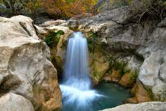

Hakkımızda
Sütçüler İlçesi’ne 20 km uzaklıkta bulunan Yazılı Kanyon Tabiat Parkı, 600 ha.lık bir alanı kapsamaktadır. Kanyonun yan duvarlarında Bizans dönemine ait ibadet yapılan bölümler, sunak yerleri ve yazılar bulunmaktadır. Bu yazıtlar nedeniyle kanyona “Yazılı Kanyon” denilmiştir. Kanyonun derinliği 100 ile 400 m.dir. Çandır Köyü hudutları içerisinde kalan park, 1989 yılında tabiat parkı olarak tescil edilmiştir.
Tabiat parkı, zengin bitki örtüsü ve yaban hayatı ile seyrine doyum olmayan eşsiz doğal güzellikleriyle turistlerin sürekli ziyaret ettiği bir yerdir. Tarihi “Kral Yolu”nun da geçtiği kanyon, tapınak ve kaya yazıtları ile tarihi önem arz etmektedir. Aziz Paul, Perge'den Pisidia Antiokheia’ya giderken bu kanyondan geçmiştir. Park alanı içerisinde, halkın dinlenmesine uygun kamp alanı bulunmaktadır.
Çandır (Aksu’nun bir kolu) Vadisinde Yazılı Kanyon Kaya Yazıtı: (Hür insan üzerine şiir)
Yürüyüş parkurunun başlangıç noktası Çandır Köyü’nden Sütçüler İlçesi’ne giden yolda, köy çıkışında Yazılı Kanyon’a ayrılan yol olarak alınmıştır. Araçla kanyonun girişine kadar gidilebilir ve yürüyüşe buradan da başlanılabilir. Kanyon girişinde su, tuvalet gibi temel ihtiyaçların karşılanabileceği küçük bir kafe bulunmaktadır. Bu noktada ziyaretçileri iki doğal güzellik karşılar… İlki kanyon duvarlarını oluşturan çok yüksek kaya blokları; ikincisi ise bu kayalardan süzülüp gelen ve vadi tabanında size yol gösteren Göksu Çayı’dır. Araç park yerinden kanyonun içine doğru yürüdükçe kaya bloklarına daha da yaklaşırken patika üzerindeki işaretler de dikkat çeker. Bu kanyon da Aziz Paul’ün geçtiği, Türkiye’nin işaretlenmiş en uzun ikinci yolu olan Aziz Paul Yolu’nun bir bölümüdür.
Dar patikada 300 metre yürüdüğünüzde karşınıza çıkan demir köprüden kanyonunun diğer tarafına geçilir ve burada Epikür’ün “Hür İnsan” adlı şiirinin yazılı olduğu kayaya ulaşılır. Yazılı Kanyon’un adı da bu yazıttan gelmektedir.
Yazıttan kanyonun içine doğru çeşitli bitkilerin, ağaçların ve çok yüksek kayaların oluşturduğu güzelliği hemen solunuzdan akıp giden Göksu Çayı’nın şırıltısı tamamlar. Bir kilometre bu şekilde yürüdükten sonra açık bir alanla karşılaşılır. Bu alanın solundan aşağıya inen patika az ilerde ziyaretçilerini bir su kaynağına götürür. Kanyonun girişinde karşılaştığınız insanların söylediği “Suyun Çıktığı Yer” burasıdır.
Kanyon, doğal bir fotoğraf çekim alanı cennetidir. Zengin bitki örtüsünün yanı sıra yaban hayatı çeşitliliği de alanı dört mevsim ziyaret etmek için iyi bir nedendir. Muhteşem akarsu, kanyon ve dağ manzarası fotoğrafları çekilebilir.